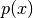
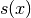
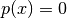
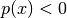
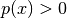
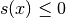
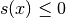

Level-sets, Xfem, fictitious domains, Cut-fem¶
Since v2.0, GetFEM++ offers a certain number of facilities to support Xfem and fictitious domain methods with a cut-fem strategy. Most of these tools have been initially mainly developed by Julien Pommier for the study published in [LA-PO-RE-SA2005].
The implementation is a fairly large generality, based on the use of level-sets, as suggested in [SU-CH-MO-BE2001] and allows simultaneous use of a large number of level-sets which can cross.
The Xfem implementation for the discretization of the jump follows the strategy of [HA-HA2004] although we had no knowledge of this work during implementation. This means that there is no degree of freedom representing the jump across the level-set. Instead, the degrees of freedom represent the displacement of each side of the level-set. This is essential in any way in the presence of level-set that intersect each other because it may exist more than two different zones of continuity inside a single element.
The cut fem strategy for fictitious domain method has been used for the first time with GetFEM++ for the study published in [HA-RE2009] where a quite simple stabilization strategy is proposed. Here also, before knowing the existence of the Work of E. Burman and P. Hanbo [bu-ha2010] on that topic.
The tools for Xfem have been then enriched by the PhD works of J. Larsy (see for instance [LA-RE-SA2010]) the one of E. Chahine (see for instance [CH-LA-RE2011], [NI-RE-CH2011]), of S. Amdouni (see for instance [AM-MO-RE2014], [AM-MO-RE2014b]) and of M. Fabre (see for instance [Fa-Po-Re2015]).
重要
All the tools listed below needs the package qhull installed on your system. This package is widely available. It computes convex hull and Delaunay triangulations in arbitrary dimension.
The programs tests/crack.cc, interface/tests/matlab/crack.m and interface/tests/python/crack.py are some good examples of use of these tools.
Representation of level-sets¶
Some structure are defined to manipulate level-set functions defined by piecewise polynomial function on a mesh. In the file getfem/getfem_levelset.h a level-set is represented by a function defined on a Lagrange fem of a certain degree on a mesh. The constructor to define a new getfem::level_set is the following:
getfem::level_set ls(mesh, degree = 1, with_secondary = false);
where mesh is a valid mesh of type getfem::mesh, degree is the degree of the
polynomials (1 is the default value), and with_secondary is a boolean whose
default value is false. The secondary level-set is used to represent
fractures (if  is the primary level-set function and
 is the secondary level-set function, the crack is defined
by  and  : the role of the secondary
is to delimit the crack).
: the role of the secondary
is to delimit the crack).
Each level-set function is defined by a mesh_fem mf and the dof values over this mesh_fem, in a vector. The object getfem::level_set contains a mesh_fem and the vectors of dof for the corresponding function(s). The method ls.value(0) returns the vector of dof for the primary level-set function, so that these values can be set. The method ls.value(1) returns the dof vector for the secondary level-set function if any. The method ls.get_mesh_fem() returns a reference on the getfem::mesh_fem object.
Note that, in applications, the level-set function often evolves thanks to an Hamilton-Jacobi equation (for its re-initialization for instance). See the A pure convection method which can be used in the approximation of a Hamilton-Jacobi equation.
Mesh cut by level-sets¶
In order to compute adapted integration methods and finite element methods to represent a field which is discontinuous across one or several level-sets, a certain number of pre-computations have to be done at the mesh level. In getfem/getfem_mesh_level_set.h is defined the object getfem::mesh_level_set which handles these pre-computations. The constructor of this object is the following:
getfem::mesh_level_set mls(mesh);
where mesh is a valid mesh of type getfem::mesh. In order to indicate that the mesh is cut by a level-set, one has to call the method mls.add_level_set(ls), where ls is an object of type getfem::level_set. An arbitrary number of level-sets can be added. To initialize the object or to actualize it when the value of the level-set function is modified, one has to call the method mls.adapt().
In particular a subdivision of each element cut by the level-set is made with simplices. Note that the whole cut-mesh is generally not conformal.
The cut-mesh can be obtained for instance for post-treatment thanks to mls.global_cut_mesh(m) which fill m with the cut-mesh.
Adapted integration methods¶
For fields which are discontinuous across a level-set, integration methods have to be adapted. The object getfem::mesh_im_level_set defined in the file getfem/getfem_mesh_im_level_set.h defines a composite integration method for the elements cut by the level-set. The constructor of this object is the following:
getfem::mesh_im_level_set mim(mls, where, regular_im = 0, singular_im = 0);
where mls is an object of type getfem::mesh_level_set, where is an enum for which possible values are
- getfem::mesh_im_level_set::INTEGRATE_INSIDE (integrate over ),
- getfem::mesh_im_level_set::INTEGRATE_OUTSIDE (integrate over ),
- getfem::mesh_im_level_set::INTEGRATE_ALL,
- getfem::mesh_im_level_set::INTEGRATE_BOUNDARY (integrate over
 and )
and )
The argument regular_im should be of type pintegration_method, and will be the integration method applied on each sub-simplex of the composite integration for elements cut by the level-set. The optional singular_im should be also of type pintegration_method and is used for crack singular functions: it is applied to sub-simplices which share a vertex with the crack tip (the specific integration method IM_QUASI_POLAR(..) is well suited for this purpose).
The object getfem::mesh_im_level_set can be used as a classical getfem::mesh_im object (for instance the method mim.set_integration_method(...) allows to set the integration methods for the elements which are not cut by the level-set).
To initialize the object or to actualize it when the value of the level-set function is modified, one has to call the method mim.adapt().
When more than one level-set is declared on the getfem::mesh_level_set object, it is possible to set more precisely the integration domain using the method:
mim.set_level_set_boolean_operations("desc");
where “desc” is a string containing the description of the boolean operation which defines the integration domain. The syntax is simple, for example if there are 3 different level-set,
“a*b*c” is the intersection of the domains defined by each level-set (this is the default behavior if this function is not called).
“a+b+c” is the union of their domains.
“c-(a+b)” is the domain of the third level-set minus the union of the domains of the two others.
”!a” is the complementary of the domain of a (i.e. it is the domain where a(x)>0)
The first level-set is always referred to with “a”, the second with “b”, and so on.
Cut-fem¶
The implementation of a cut finite element method such as described in [bu-ha2010], i.e. a finite element on a fictitious domain restricted to a smaller real domain, is possible just using the previous tools and mainly the adapted integration method. Several examples are available on GetFEM++ test programs. See for instance interface/tests/python/demo_fictitious_domain.py or interface/tests/matlab/demo_fictitious_domain.m.
In this context, one often needs to restrict the unknown finite element field to the degrees of freedom whose corresponding shape function supports have an intersection with the real domain. This can be done using the partial_mesh_fem object. See for instance interface/tests/matlab/demo_structural_optimization.m.
Note that often, a stabilization technique have to be considered in order to treat eventual locking phenomena due to element with very small intersection with the real domain for example when applying a Dirichlet condition. See for instance [bu-ha2010], [HA-RE2009] and [Fa-Po-Re2015].
Discontinuous field across some level-sets¶
The object getfem::mesh_fem_level_set is defined in the file getfem/getfem_mesh_fem_level_set.h. It is derived from getfem::mesh_fem object and can be used in the same way. It defines a finite element method with discontinuity across the level-sets (it can deal with an arbitrary number of level-sets). The constructor is the following:
getfem::mesh_fem_level_set mfls(mls, mf);
where mls is a valid mesh of type getfem::mesh_level_set and mf is the an object of type getfem::mesh_fem which defines the finite element method used for elements which are not cut by the level-sets.
To initialize the object or to actualize it when the value of the level-set function is modified, one has to call the method mfls.adapt().
To represent discontinuous fields, the finite element method is enriched with discontinuous functions which are the product of some Heaviside functions by the shape functions of the finite element method represented by mf (see [HA-HA2004] and [Xfem] for more details).
Xfem¶
The Xfem (see [Xfem]) consists not only in the enrichment with some Heaviside functions (which is done by the object getfem::mesh_fem_level_set) but also the enrichment with asymptotic displacement at the crack tip. There is several manner to enrich with an asymptotic displacement: enrichment only on the element containing the crack tip as in [Xfem], enrichment in a fixed size zone as in [LA-PO-RE-SA2005] or [Be-Mi-Mo-Bu2005], enrichment with a cut-off function as in [CH-LA-RE2008] or [NI-RE-CH2011] or with an integral matching condition between the enriched and non-enriched zones as in [CH-LA-RE2011]. The choice in Getfem fell on maximum flexibility to easily implement all possibilities. As it is mainly a transformation of the finite element method itself, two tools have been defined to produce some enriched finite elements:
getfem::mesh_fem_product mf_asympt(mf_part_unity, mf_sing)
getfem::mesh_fem_sum mf_sum(mf1, mf2)
where mf_sing should be a global ‘finite element method’, in fact just a collection of global functions (with or without a cut-off function) defined thanks to the object getfem::mesh_fem_global_function (see the file src/getfem/getfem_mesh_fem_global_function.h) and mf_part_unity a basic scalar finite element method. The resulting `` getfem::mesh_fem_product`` is the linear combination of all the product of the shape function of the two given finite element methods, possibly restricted to a sub-set of degrees of freedom of the first finite element method given by the method mf_asympt.set_enrichment(enriched_dofs).
Once the asymptotic enrichment is defined, the object getfem::mesh_fem_sum allows to produce the direct sum of two finite element methods. For instance of the one enriched by the Heaviside functions (getfem::mesh_fem_level_set object) and the asymptotic enrichment.
See interface/tests/matlab/demo_crack.m, interface/tests/python/demo_crack.py or tests/crack.cc for some examples of use of these tools.
Additionally, the weak form language defines the two commands Xfem_plus and Xfem_minus allowing to take into account the jump of any field or derivative of any field across a level-set (see Xfem discontinuity evaluation (with mesh_fem_level_set)). This a priori allows to write any interface law easily.
Note also that some procedures are available in the file src/getfem/getfem_crack_sif.h to compute the stress intensity factors in 2D (restricted to homogeneous isotropic linearized elasticity).
Post treatment¶
Several tools are available to represent the solution only on a side of a levels-set or on both taking into account the discontinuity (for Xfem approximation).
When a cut-mesh mls is used (i.e. a getfem::mesh_level_set object), is is possible to obtain the set of all sub-elements with the command:
mls.global_cut_mesh(mcut);
where mcut has to be an empty mesh which will be fill by the sub-elements. Note that the resulting mesh is a non-regular one in the sense that the sub-mesh of all elements are not conformal at the element edges/faces. It is however possible to interolate on a Lagrange fem on this mesh and make a post-treatment with it to correctly represent a discontinuous field.
Another mean to represent only the interesting part of the solution when a fictitious domain method is used is to use the mesh slices defined by an isovalue level-set (see Producing mesh slices).
see for instance files interface/tests/matlab/demo_crack.m, interface/tests/python/demo_fictitious_domain.py and interface/tests/matlab/demo_structural_optimization.m.

目次
前のトピックへ
Incorporate new approximated integration methods in GetFEM++
次のトピックへ
Interpolation of a finite element method on non-matching meshes
Download
Main documentations
- GetFEM++ User documentation
- Python Interface
- Matlab Interface
- Scilab Interface
- Gmm++
- GetFEM++ project